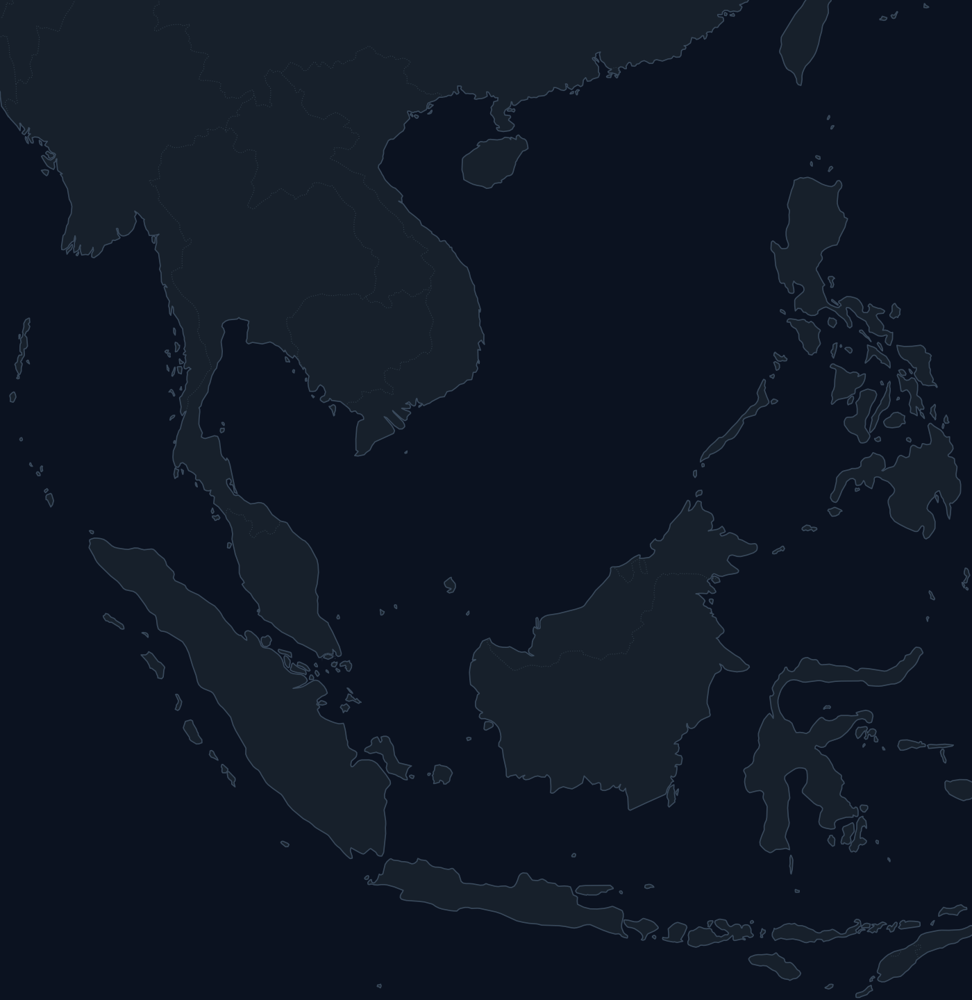

Gió, mưa, ẩm thật tại 32 trạm/điểm Đông Nam Á (warehouse WeatherObs, Nhóm 16 IT5427). Hạt gió và lớp mây là hiệu ứng dựng để nhìn xu hướng; số liệu nền là số đo thật.

Real: toạ độ 32 trạm/điểm, tốc độ/hướng gió trung bình ngày, tổng lượng mưa ngày, %RH trung bình — đều lấy từ warehouse WeatherObs thật (ISD/GHCN/NASA_POWER/OPEN_METEO), ngày 7/9/2024 (Yagi đổ bộ). Derived: trường vector gió nội suy IDW giữa các trạm; lớp "mây" là bán kính/độ mờ tỉ lệ với %RH (proxy độ ẩm, KHÔNG phải ảnh mây vệ tinh thật — dữ liệu cloud_cover_pct không có trong warehouse hiện tại). Schematic: tốc độ hạt gió trên màn hình đã phóng to nhiều lần so với thời gian thực để thấy rõ hướng/độ mạnh tương đối giữa các vùng, không dùng để đọc ra tốc độ di chuyển thật.